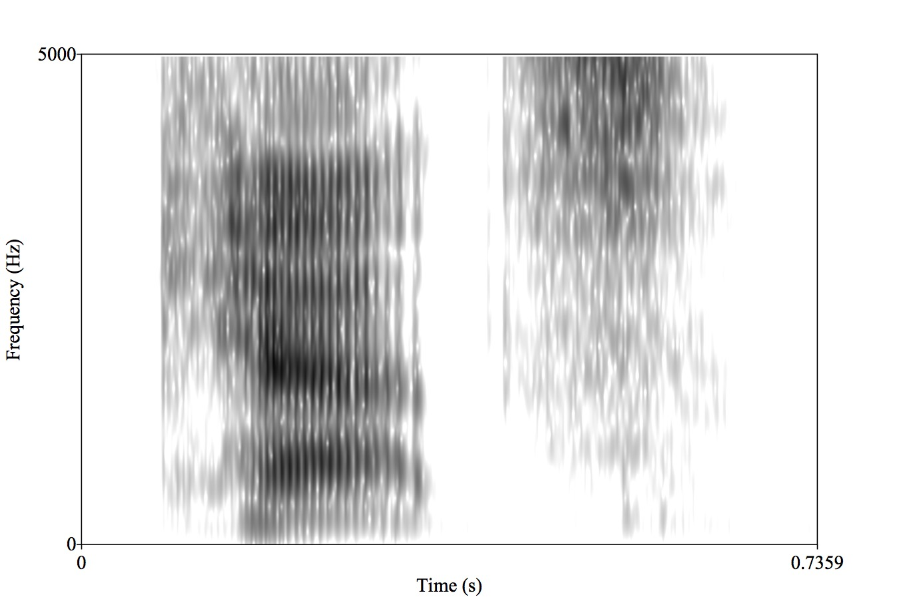
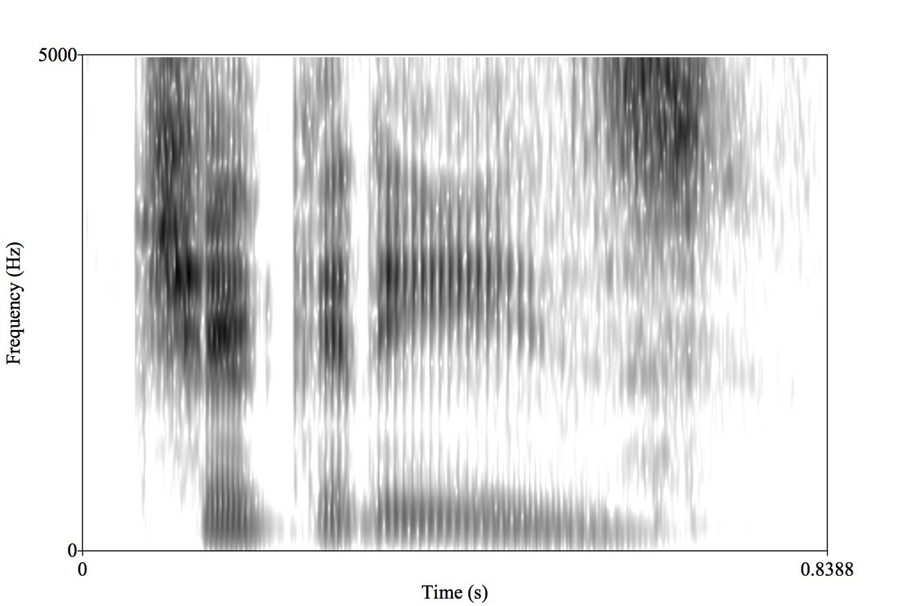
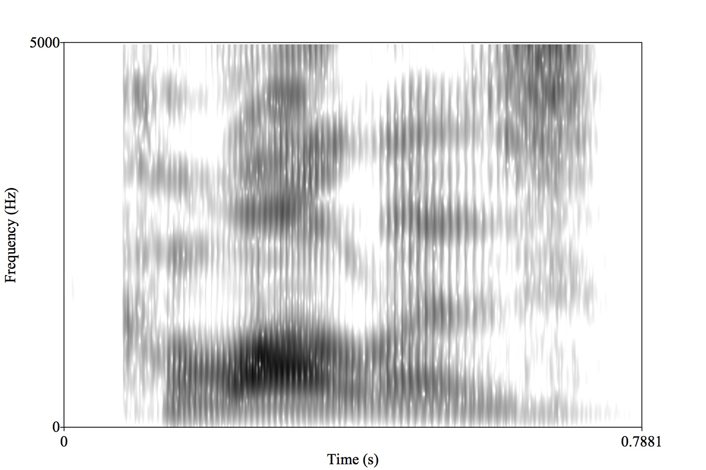
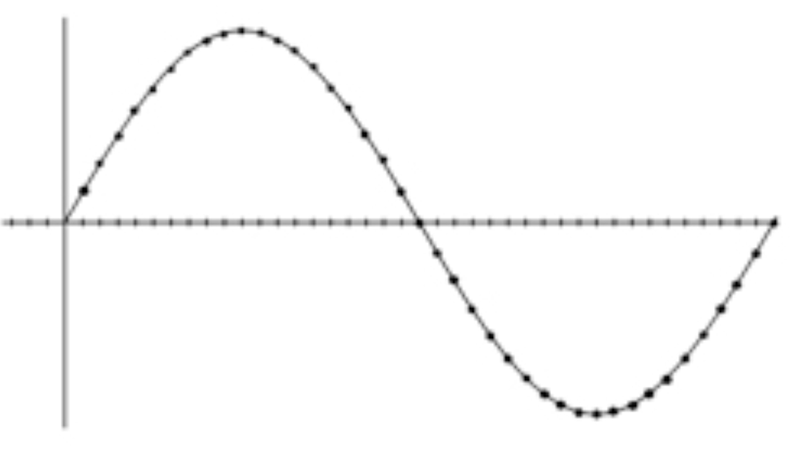
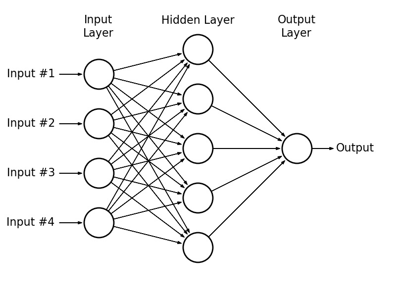

http://savethevowels.org/talks/deep_learning_speech.html
The vast majority of human languages are spoken
Many human/computer interactions work better by voice
We can speak faster and more readily than we can type
We want our systems to be able to work with spoken language too!
Automatic Speech Recognition (ASR)
Speech Synthesis or Text-to-speech (TTS)
Voice or language recognition
Real-time spoken translation
ASR and TTS are fraught with thousands of complexities in the tasks
The datasets are very expensive to get and store and annotate
Speech is amazingly complicated
… but we want to be good at them, so badly
Taking acoustic data as input and classifying it
Taking written words as input and generating appropriate spoken data
Most speech work was done with HMMs for a long time
Now deep neural network approaches are taking over
Apple is announcing Neural TTS in keynotes!
As a result…
Companies are really guarded about their speech processing algos
The state-of-the-art is changing every day
We’re going to focus on the basic issues involved with speech classification
What is the nature of speech?
How do we discuss and display sound?
What is the nature of the speech signal?
How can we turn speech into features?
What is the training data?
Flapping bits of meat inside your head while blowing out air
This creates vibrations in the air you’re expelling
The ear picks these up, and inteprets them as speech.
This process is studied in the Linguistic subfield of Phonetics


The North Wind and the Sun were disputing which was the stronger, when a traveler came along wrapped in a warm cloak.
It’s a series of fluid and overlapping gestures
It’s amazingly complex
… and it’s nothing like we think it is
First, we break speech into ‘segments’ or ‘phones’
Then, we figure out how to describe those phones and their properties
This lets us transcribe what was said, rather than what words were said
But first you need to realize that…

Every minute of every day
“They thoroughly and roughly wrought the boughs in the borough, through and through”
C doesn’t exist
TH is neither a t nor an h, and represents two different sounds
We have 15 vowels
… and if you start thinking about letters, you’re going to start struggling
Consider your writing system with the same skepticism you would normally reserve for a guy with a broken bottle walking towards you in a dark alley.
The International Phonetic Alphabet was developed by Linguists
ARPABET uses two character combinations to encode the sounds of English
Often, TTS and ASR use these alphabets as a ‘go-between’
Individual speech sounds
With hard-to-identify boundaries between them
Which is broadcasted to the world acoustically


Why does clapping cause a sound, but waving your hand through the air doesn’t?
Why are gunshots loud?
Waveforms
Spectrograms
A horizontal cut through the wave showing the peaks and troughs over time


The speed with which a wave oscillates


Changing the “fundamental frequency” of your voice changes the perceived “pitch” of your voice
Higher frequency of vocal fold vibration == “higher pitch”
Intonation is all about this frequency!
Different phenomena produce sounds at different frequencies
Most things produce sounds with a mix of different frequencies, each at different amplitudes
Speech has many components at different frequencies
Each of those frequencies has a different power

Displays signal strength by frequency, over time

SpectrumView on iOS
https://musiclab.chromeexperiments.com/Spectrogram/
Praat (http://praat.org)
These are individual glottal pulses
Higher pitched voices will have…?
Resonances vary depending on the tongue’s position
Different resonances from the same speaker mean different vowels

Different American English vowels, as spoken by a male speaker
This is a fundamental problem in ASR and speech perception
Enough data can help, but this is a major issue







The expression of a given gesture can have many acoustic consequences
Different speakers have different realizations of each sound
Different phones sound different in different contexts
… but it all has to happen from this signal
If we don’t know what words sound like, we can’t teach computers what they sound like
Similar patterns are easy to confuse for humans and computers
This lets us understand a bit more about how speech technology might work
… but first, we need to ask an important question

010001110010101000100101101010101010



Sample the wave many times per second
Record the amplitude at each sample
The resulting series of measurements will faithfully capture the signal
The Bit Depth describes how many bits of information encode amplitude
The Sampling Rate describes how many samples per second we take
It’s cheap and easy
Wave2Vec is showing amazing results doing just this!
This is a very, very tantalizing possibility
Important parts of the signal live only in frequency band info
Many approaches try to give it all the information we can
Not the same features that linguists usually use
Things like vowel features and pitch and other details are a pain to extract
We’re plugging it into a black box
We’re happy to plug in hundreds of features, if need be
We’d just as soon turn that sound into a boring matrix
This is a lot of signal processing
We’re going to teach the idea, not the practice

1: Create a spectrogram (effectively)
2: Extract the most useful bands for speech (in Mels)
3: Look at the frequencies of this banded signal (repeating the Fourier Transform process)
4: Simplify this into a smaller number of coefficients using Discrete Cosine Transform (DCT)

Many columns (representing time during the signal)
N columns (usually 13) with coefficients which tell us the spectral shape
It’s black-boxy, but we don’t care.
We’ve created a Matrix

MFCCs captures frequency information, according to our perceptual needs
Wav2Vec (and equivalents) go straight to vectors

First, one major question…
We need to give the NN labeled data
[Chunk of Sound] == [Labeled Linguistic Info]
What level do we want to recognize and generate at?
Sentences?
Words?
Phones?
Diphones?
“Noise”


As do many others
Triphones are often a possibility
Some go straight to entire words
Speech recognition systems are often kept secret
Capture sounds and annotate them as diphones
Vectorize them and feed them into a neural network as training data
We can do speech recognition, text-to-speech, and more!
Feed the vectorized sound data in and get the most likely diphone sequence back
ASR requires good dictionaries
ASR requires some context awareness
Dialect is always a thing
… and 99 other problems
Feed the diphone sequence in, get back a likely acoustic signal
Style transfer is possible too!
Training the model on a generic voice
Then learning the variation associated with another as a style embedding
Then applying the variation to the model
Text-to-speech requires you to understand how humans talk
… and the prosody is really hard
… and 99 other problems

Speech is movement of the articulators in the airstream
This creates sounds which vary in frequency and amplitude over time
This signal can be analyzed as a matrix of opaque cepstral features
… and then fed into a neural network with linguistic annotations
To generate and classify human speech
So…
It’s never going to be easy
It’s never going to be cheap
… but it’ll work
And it’ll get you that much closer to actual human interaction!